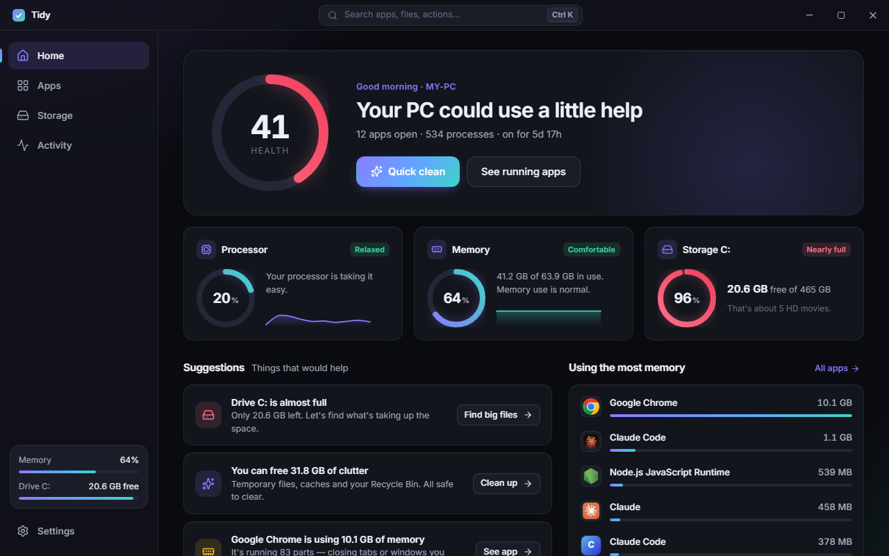
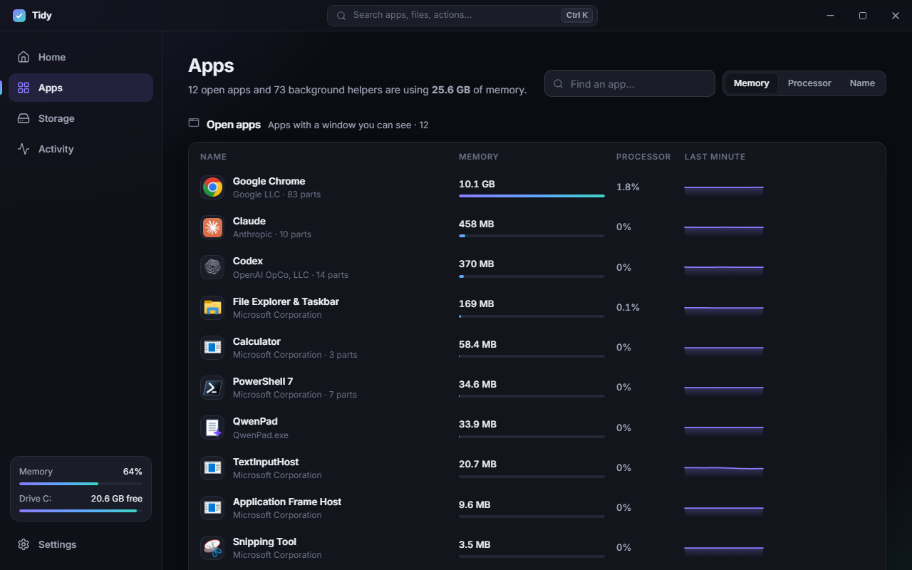
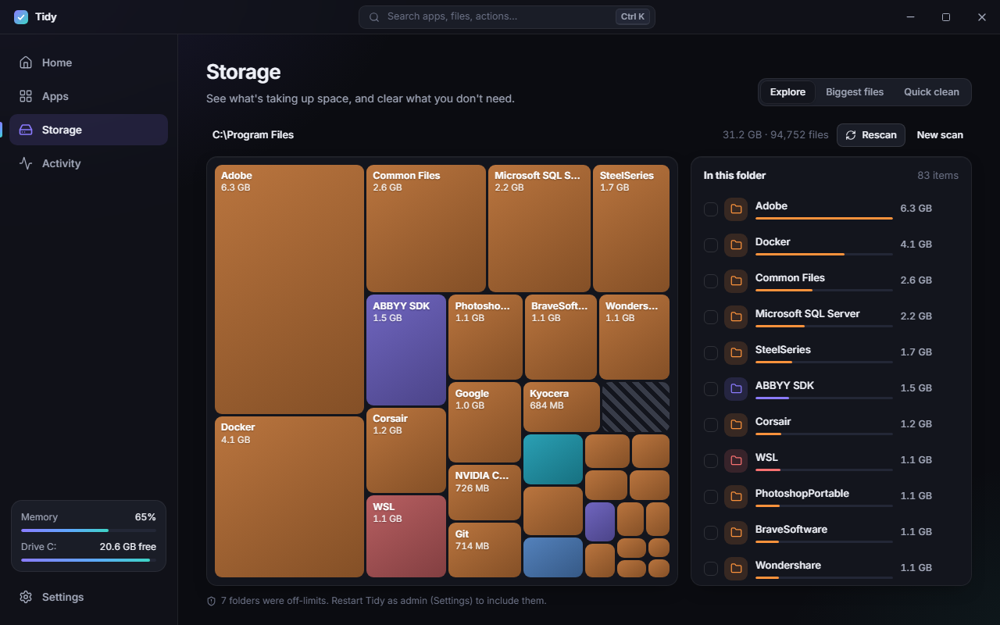
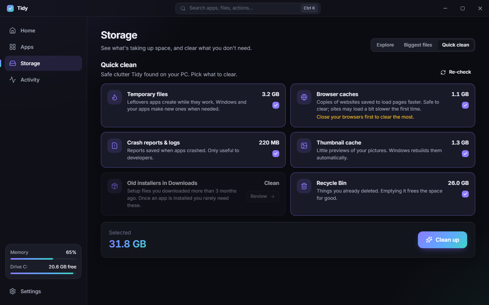
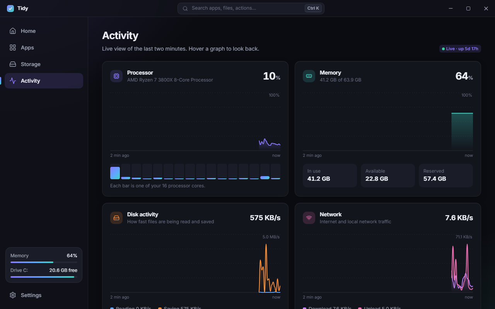
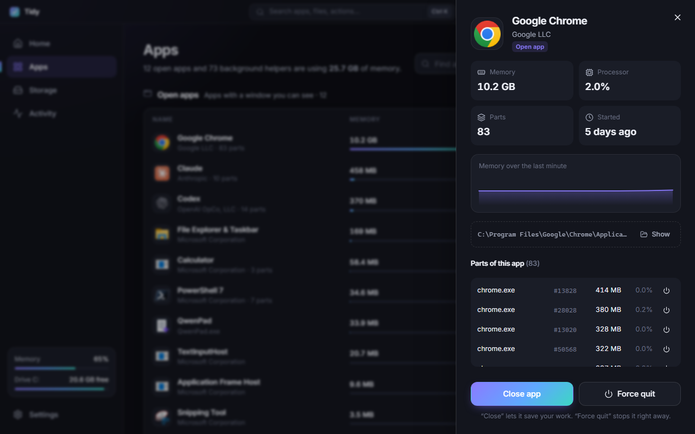
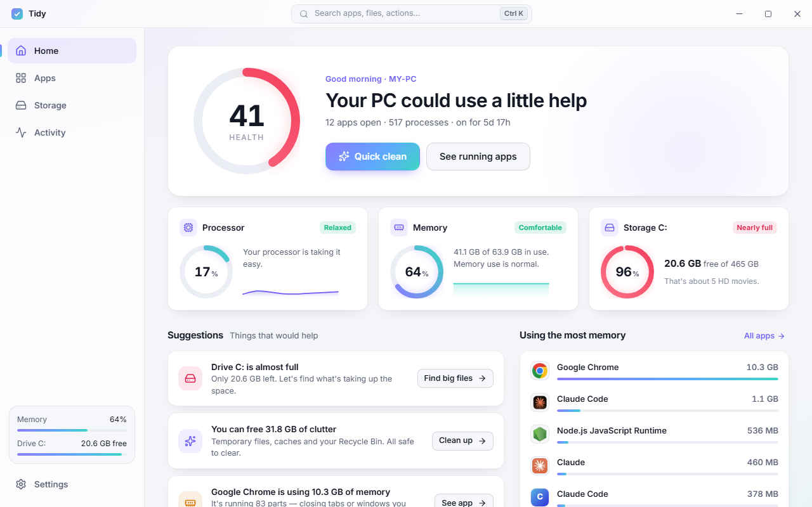

Tidy shows which apps are eating your memory, what's filling your drive and what's safe to delete, and lets you fix it in a click. It's beautiful enough to enjoy and simple enough for anyone.
Windows 10 & 11 · 64-bit · one portable 13 MB .exe · no installer · MIT license

“Google Chrome is using 9.2 GB of memory.” “You can free 31.7 GB of clutter.” “Drive C: is almost full. Here's what's taking the space.”
Four simple pages, and an explanation next to every number.
80 chrome.exe entries become one “Google Chrome” row with its real icon, live memory and CPU, and a one-minute trend.
Close an app politely so it can save your work, or stop it right away. Critical parts of Windows are protected.
Scan any drive or folder and click through a map colored by what fills each folder: videos, games, AI models, installers.
Temp files, browser caches, crash reports, the thumbnail cache, old installers and the Recycle Bin, all safe to clear.
Deleted files go to the Recycle Bin, and there's an Undo button right there. Tidy refuses to delete anything Windows needs.
Scan a QR code and type a 6-digit code to see the same screens on your phone. It's encrypted, and you can make it view-only.
Dark and light themes, live graphs, a Ctrl+K command palette, and a layout that also works on phones.






One portable file. No installer, no account, no admin rights.
%LOCALAPPDATA%\Programs\Tidy, and double-click it.Needs the Microsoft Edge WebView2 runtime, which is already on Windows 11 and up-to-date Windows 10. To uninstall, delete the .exe and %APPDATA%\Tidy.
Same friendly idea, two sizes. Pick the one that fits your PC.
| Tidy | Tidy Lite | |
|---|---|---|
| Download size | 13 MB | 111 KB |
| Memory in use | ~75 MB + WebView2 | ~45 MB total |
| Apps: memory, CPU, Close / Force quit | ✅ | ✅ |
| Storage scan, biggest files, Recycle Bin + Undo | ✅ with treemap | ✅ lists |
| Quick clean | ✅ | ✅ |
| Live graphs, command palette, light/dark themes | ✅ | Follows Windows theme |
| Remote access from phone / browser | ✅ | — |
| Web engine | WebView2 | None (native Win32) |
Yes. It only removes what you choose, deleted files go to the Recycle Bin with Undo, and it refuses to stop critical Windows processes (System, csrss, lsass, winlogon…) or delete folders like Windows and Program Files. Every action is logged to %APPDATA%\Tidy\audit.log, and the code is open source.
No. Tidy has no telemetry, analytics or update checks. The only network feature is remote access, which stays off unless you turn it on, and it only accepts devices that know your pairing code.
The exe isn't code-signed yet, so SmartScreen doesn't recognise it. Click More info → Run anyway, or compare the file's SHA-256 hash with SHA256SUMS.txt on the release page.
Open Settings → Remote access and turn it on. Scan the QR code with your phone, accept the one-time certificate warning, and type the 6-digit code shown on your PC. For use away from home, connect through a VPN like Tailscale.
No. There's no service, tray icon or startup entry, and it uses no CPU when the window is closed.